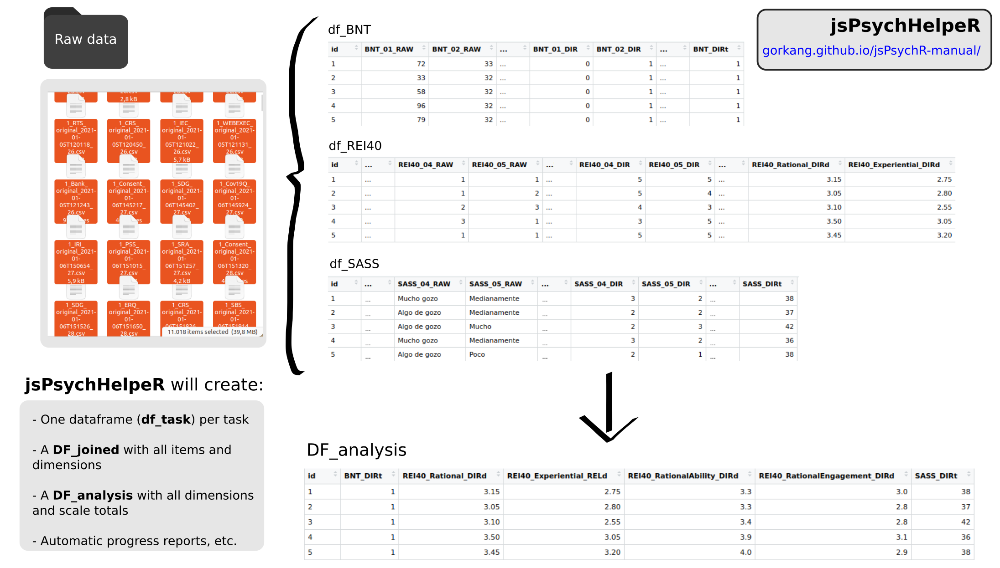

if (!require('remotes')) utils::install.packages('remotes'); remotes::install_github('gorkang/jsPsychHelpeR')5 jsPsychHelpeR
jsPsychHelpeR: Standardize and automatize data preparation and analysis of jsPsych experiments created with jsPsychMaker.
See QuickGuide for basic instructions.

5.1 How to prepare data
Our goal is that each jsPsychMaker task has a sister script on jsPsychHelpeR to help prepare the data automatically. If a task you need does not have one, you can try to create the script yourself and do a pull request in the jsPsychHelpeR repo, or see the section help creating a new task.
If you already ran a pilot experiment, simply:
- Install
jsPsychHelpeR:
jsPsychHelpeR::run_initial_setup()will:
- Try to make sure you have all the dependencies, folders, etc.
- Copy the data to the data/pid folder
- Move data with sensitive tasks to the .vault folder
- Create a customized
_targets.Rfile adapted to the data of your protocol, so data preparation can run automagically
jsPsychHelpeR::run_initial_setup(pid = '999',
data_location = '~/Downloads/JSPSYCH/999/',
folder = '~/Downloads/jsPsychHelpeR_999/')If you have the sFTP credentials for the server, it will:
- Download all the data from your protocol (you will need the FTP credentials and set
download_files = TRUE)
- Download and zip a copy of the full protocol without the data (you will need the FTP credentials and set
download_task_script = TRUE)
This should work on Ubuntu, if you have the FTP credentials, and sshpass and rsync installed.
jsPsychHelpeR::run_initial_setup(pid = '999',
download_files = TRUE,
download_task_script = TRUE,
folder = "~/Downloads/jsPsychHelpeR_999")5.1.1 Targets pipeline
To help make the pipeline reproducible and more efficient, we use the targets package (Landau 2021). A few basic things to know:
The whole process can be reproduced running
targets::tar_make()A nice visualization of all the pre-processing steps can be seen with
targets::tar_visnetwork(targets_only = TRUE)The file
_targets.Rcontains the important parameters and calls to all the functions used when runningtargets::tar_make()
To see more detail about any specific step, you can:
Go to the relevant function in
_targets.R(cursor on a function, then F2)Load the input parameters of the function with
debug_function(NAME_OF FUNCTION). Alternatively, manually usetargets::tar_load(NAME_OF_TARGET)Run the code step by step as you would normally do
5.2 Basics
jsPsychHelpeR uses as input a data created with a jsPsychMaker experimental protocol.
5.2.1 Inputs
The input data folder will be named after the protocol_id, for example 999/ and needs to be placed in the data/ folder of the jsPsychHelpeR project data/YOUR_PROJECT_NUMBER:
- The data folder can contain either multiple .csv files, or a single .zip file
There will be a single .csv file for each participant and task of the protocol. For example:
- 999_Consent_original_2022-04-02T205622_1.csv:
- [project: 999]_[experimento: Consent]_[version: original]_[datetime: 2022-04-02T205622]_[participant id: 1]
5.2.2 Outputs
When the pipeline successfully runs with targets::tar_make(), a number of outputs will be created.
All the outputs can be found in the /outputs folder. The only exception is the sensitive data and reports, which can be found in .vault/outputs. WARNING: The ‘.vault/’ folder MUST NOT be made public.
5.2.2.1 Output folders
The outputs will be organized in different folders:
Data frames for different stages of data processing can be found in
outputs/dataTemporary files for manual correction are in
outputs/data/manual_correction(the final manual correction files must be place by the user indata/manual_correction). WARNING: These will be overwritten each time the pipeline runsPlots, tables and reports are in
outputs/plots,outputs/tablesandoutputs/reportsrespectively.Test outputs are in
outputs/tests_outputsAnonymized Raw data will be moved to
.vault/data_vault/
5.2.2.2 Output dataframes
There will be a single data frame (df) for each of the tasks in outputs/data, plus a data frame (DF) for each of the steps of the data preparation, and a dictionary file listing all the available tasks. We store the files in two formats, csv and rds:
DF_raw.csv: All the
data/project_id/csv files combined on a single file. We only add the columns “project”, “experimento”, “version”, “datetime”, “id” by parsing the filenamesDF_clean.csv: Clean version of the raw file ready to process the individual tasks
df_ShortNameOfTask.csv: One df for each of the tasks of the protocol after being processed with the
prepare_ShortNameOfTask()functionsDF_joined.csv: all the processed tasks joined in a single DF
DF_analysis: only the total scores and dimensions from
DF_joined(columns ending in_DIRt,_STDt,_DIRd,_RELd,STDd). Can be visually explored using the shiny app inRmd/app.RDF_analysis_blinded: If the
DVarsparameter ofcreate_DF_analysis()is not empty, jsPsychHelpeR will create DF_analysis_blinded where the DVars will be scrambled so te data analysts can perform blinded analysisDICCIONARY_tasks.csv: list of all tasks in the protocol
5.2.2.3 Output dataframes column names
All the output processed data frames columns are named in a standardized way:
ShortNameOfTask_ItemNumber_RAW: raw responses of participants for individual items
ShortNameOfTask_ItemNumber_DIR: processed raw responses following the task correction instructions (e.g. inverting certain items, converting strings to numbers, computing accuracy…)
ShortNameOfTask_RAW_NA: number of missing data (NA) in the RAW responses
ShortNameOfTask_DIR_NA: number of missing data (NA) in the DIR responses. If it is not equal to
ShortNameOfTask_RAW_NAthere is something wrong in the items correction.ShortNameOfTask_DimensionName_DIRd: scores for a specific dimension (
d) in a task, calculated following task correction instructions (e.g. summing or averaging certain items)ShortNameOfTask_DimensionName_RELd: scores for a specific dimension (
d) in a task, calculated following task correction instructions AND after filtering items with low reliability. See Reliability section for more information.ShortNameOfTask_DimensionName_STDd: standardized score for a dimension (
d)ShortNameOfTask_DIRt: total (
t) score for a task calculated following task correction instructions (e.g. summing or averaging all items)ShortNameOfTask_STDt: standardized (
t) score for a task
5.3 Errors in the pipeline
See the targets manual for more information.
We include tar_option_set(workspace_on_error = TRUE) in _targets_options.R so if there is an error in our pipeline, targets will automatically save the workspace. This allows you to go to the relevant target and debug interactivelly.
If you get an error:
- List the available workspaces (e.g. DF_clean):
tar_workspaces()
- Load the errored workspace:
tar_workspace(DF_clean)
5.4 Advanced
5.4.1 Need help preparing new task
If you need help preparing a NEW task, see the section help with new tasks.
5.4.2 Create your own reports
You can use any of the template reports in the _targets.R file, or create your own reports.
We will start opening one of the template reports: rstudioapi::navigateToFile("doc/report_analysis.Rmd").
Edit the RMarkdown file to adapt it to your needs.
If you already did
targets::tar_make(), when runningtargets::tar_load(DF_analysis)the dataframeDF_analysiswill load in your Environment.
Go back to the _targets.R file:
- Look for
# Analysis reportand uncomment the following lines:
# tar_render(report_analysis, "doc/report_analysis.Rmd",
# output_file = paste0("../outputs/reports/report_analysis.html")),When you finished editing and uncomented the tar_render command, go back to the run.R file:
targets::tar_make()
5.4.3 Create new tasks
To create the correction script for a new task, you start with:
create_new_task(short_name_task = "NAMETASK")
This will:
create a new file from a template correction script (
R_tasks/prepare_TEMPLATE.R)adapt it to your
short_name_taskto make everything as standardized as possibleopen the new
prepare_NAMETASK.Rfile
If the parameter get_info_googledoc = TRUE:
The NEW tasks document is checked.
If the document has been filled properly, it will show in the console standardized strings (ready to be copy/pasted to the new
prepare_NAMETASK.Rfile) about:dimension names
items corresponding to each dimension
dimension calculation
inverse items
numeric conversion of items
You can also use get_dimensions_googledoc() as a standalone function:
get_dimensions_googledoc(short_name_text = "MLQ")
All the prepare_NAMEOFTASK.R scripts on the R_tasks/ folder have been created starting from the same template. The only exception are the experimental tasks and some surveys with particularities that require more complex adaptations.
When you finish implementing the correction script, please do a Pull request so we can add you script to the pool. If you have not already, please help us filling up details about the task in the NEW tasks document.
5.4.4 Adapting new tasks
get_dimensions_googledoc will show you how to adapt the prepare_TASK() script, but you will need to know how it works to be able to edit the relevant bits. Also, sometimes get_dimensions_googledoc won’t get all the details of the task right, or there could be non-standard elements to it. Here, we will describe some of the elements of the template to help understand how it works.
Remember you should ALWAYS start with create_new_task(short_name_task = "NAMETASK") so your task template works well with jsPsychHelpeR.
There are three chunks you will need to adapt to have a fully working preparation script.
[ADAPT 1/3]: Items to ignore and reverse, dimensions[ADAPT 2/3]: RAW to DIR for individual items[ADAPT 3/3]: Scales and dimensions calculations
5.4.4.1 Items to ignore and reverse, dimensions
# [ADAPT 1/3]: Items to ignore and reverse, dimensions -----------------------
# ****************************************************************************
description_task = "" # Brief description here
items_to_ignore = c("000") # Ignore these items: If nothing to ignore, keep as is
items_to_reverse = c("000") # Reverse these items: If nothing to reverse, keep as is
## NameDimension1, NameDimension2 should be the names of the dimensions
## Inside each c() create a vector of the item numbers for the dimension
## Add lines as needed. If there are no dimensions, keep as is
items_dimensions = list(
NameDimension1 = c("000"),
NameDimension2 = c("000")
)
# [END ADAPT 1/3]: ***********************************************************
# ****************************************************************************5.4.4.2 RAW to DIR for individual items
DF_long_DIR =
DF_long_RAW %>%
select(id, trialid, RAW) %>%
# [ADAPT 2/3]: RAW to DIR for individual items -------------------------------
# ****************************************************************************
# Transformations
mutate(
DIR =
case_when(
RAW == "Nunca" ~ 1,
RAW == "Poco" ~ 2,
RAW == "Medianamente" ~ 3,
RAW == "Bastante" ~ 4,
RAW == "Mucho" ~ 5,
is.na(RAW) ~ NA_real_,
grepl(items_to_ignore, trialid) ~ NA_real_,
TRUE ~ 9999
)
) %>%
# Invert items
mutate(
DIR =
case_when(
DIR == 9999 ~ DIR, # To keep the missing values unchanged
trialid %in% paste0(short_name_scale_str, "_", items_to_reverse) ~ (6 - DIR),
TRUE ~ DIR
)
)
# [END ADAPT 2/3]: ***********************************************************
# ****************************************************************************5.4.4.3 Scales and dimensions calculations
# [ADAPT 3/3]: Scales and dimensions calculations ----------------------------
# ****************************************************************************
# Reliability -------------------------------------------------------------
# REL1 = auto_reliability(DF_wide_RAW, short_name_scale = short_name_scale_str, items = items_DIRd1)
# items_RELd1 = REL1$item_selection_string
# [USE STANDARD NAMES FOR Scales and dimensions: names_list$name_DIRd[1], names_list$name_DIRt,...]
# CHECK with: create_formulas(type = "dimensions_DIR", functions = "sum", names_dimensions)
DF_wide_RAW_DIR =
DF_wide_RAW %>%
mutate(
# [CHECK] Using correct formula? rowMeans() / rowSums()
# Score Dimensions (see standardized_names(help_names = TRUE) for instructions)
!!names_list$name_DIRd[1] := rowMeans(select(., paste0(short_name_scale_str, "_", items_dimensions[[1]], "_DIR")), na.rm = TRUE),
!!names_list$name_DIRd[2] := rowSums(select(., paste0(short_name_scale_str, "_", items_dimensions[[2]], "_DIR")), na.rm = TRUE),
# Reliability Dimensions (see standardized_names(help_names = TRUE) for instructions)
# !!names_list$name_RELd[1] := rowMeans(select(., paste0(short_name_scale_str, "_", items_RELd1, "_DIR")), na.rm = TRUE),
# Score Scale
!!names_list$name_DIRt := rowSums(select(., matches("_DIR$")), na.rm = TRUE)
)
# [END ADAPT 3/3]: ***********************************************************
# ****************************************************************************5.4.5 DEBUG tasks
At the begining of each of the R_tasks/prepare_NAMETASK.R scripts you will find a commented debug_function(prepare_NAMETASK) line.
When running it, it will load the input parameters for the task. From there, you can work inside of the preparation scipt as you would normally do in a R script.
If you get the error "Error in debug_function(prepare_NAMETASK) : could not find function 'debug_function'debug_function()does nor work" you will need to load all the functions in the R/ folder first.
You can do this in one of three ways:
CONTROL + Pshortcut will work if therun_initial_setup()completed correctly (at least on Ubuntu systems).Run
targets::tar_load_globals()Or directly, source all the scripts in the
R/folder:invisible(lapply(list.files("./R", full.names = TRUE, pattern = ".R$"), source))
5.4.6 Docker containers
The function jsPsychHelpeR::create_docker_container() will create a fully reproducible docker container with the data preparation and analysis for a specific project.
The container can be easily shared or stored to allow others to run the data preparation and analysis for you project without worrying about dependencies, versions of packages, etc.
See more information about the setup in the admin section.
The gist of it is, after you have the full data preparation and analysis for you project ready, to create the container image and share it, just run:
# 1) Set your project ID
PID = 999
# 2) Create docker image
jsPsychHelpeR::create_docker_container(PID = PID)
# 3) SHARE your docker image
# Using Dockerhub
system(paste0("docker push gorkang/jspsychhelper:pid", PID))
# Using a .tar file
system(paste0("docker save gorkang/jspsychhelper:pid", PID, " | zip > pid", PID, ".tar.zip"))To load and run the container image (if you are using Windows, see here):
# 1) Set your project ID
PID = 999
# 2) Get the docker image loaded into to your computer
# Dockerhub
system(paste0("docker pull gorkang/jspsychhelper:pid", PID))
# .tar file
utils::unzip(zipfile = paste0("pid", PID, ".tar.zip"), files = paste0("-"))
system(paste0("docker load --input -"))
# 3) Run docker container
system(paste0("docker run --rm -d --name pid", PID, " -v ~/Downloads/jsPsychHelpeR", PID, "/outputs:/home/project/jsPsychHelpeR/outputs:rw gorkang/jspsychhelper:pid", PID))The output will be in Downloads/jsPsychHelpeR[PID]/outputs/ after a couple of minutes. You can see the data preparation and analysis progress using docker desktop.
5.4.7 Blinded analysis
The function create_DF_analysis() has the parameter DVars to select the Dependent Variables in your data that should be scrambled to be ready for a blinded analysis. We use a simple sort() in those variables, so their data will be ordered from smaller to bigger, losing the relationship with the other variables in the data, but keeping their structure.
See MacCoun, R., & Perlmutter, S. (2015). Blind analysis: Hide results to seek the truth. Nature, 526(7572), 187-189 (https://doi.org/10.1038/526187a), or Sarafoglou, A., Hoogeveen, S., & Wagenmakers, E. J. (2023). Comparing analysis blinding with preregistration in the many-analysts religion project. Advances in Methods and Practices in Psychological Science, 6(1), 25152459221128319. (https://doi.org/10.1177/25152459221128319)
5.5 Helper functions
5.5.1 Reliability
You can use the auto_reliability() function to help you automatically filter items with low reliability (although doing this automatically is probably a bad idea). The function uses psych::alpha() and filters by default items with an r.drop <= 0.2. See psych::alpha() help for more details. IMPORTANT: Using psych::omega() is generally a better idea, see the alpha help page.
An example can be found in prepare_REI40().
The basic logic would be:
# Define items for a specific dimension
items_DIRd1 = c("01", "02", "03", "04", "05", "06", "07", "08", "09", "10")
# Calculate reliability
REL1 = auto_reliability(DF_wide_RAW, short_name_scale = short_name_scale_str, items = items_DIRd1, min_rdrop = 0.2)
# Store item selection in a variable
items_RELd1 = REL1$item_selection_string
# In the final Dimension calculation, use the item selection including only the items with a reliability over the defined threshold
## See `items_RELd1` below
!!names_list$name_RELd[1] := rowMeans(select(., paste0(short_name_scale_str, "_", items_RELd1, "_DIR")), na.rm = TRUE),
# Compare it with the calculation including the original items
## See `items_DIRd1` below
!!names_list$name_DIRd[1] := rowMeans(select(., paste0(short_name_scale_str, "_", items_DIRd1, "_DIR")), na.rm = TRUE), 5.6 Technical aspects
5.6.1 How trialid’s are processed
See PRFBM:
- If more than one response per screen
- Item:
PRFBM_04 - Responses:
{"daño":"Parcialmente en desacuerdo","beneficio":"Parcialmente en desacuerdo"} - final trialids:
PRFBM_04_beneficioandPRFBM_04_daño
- Item:
5.7 Common ERRORS
5.7.1 run_initial_setup():
x Can find server credentials in '.vault/.credentials'
x 0 tasks found for protocol 'TU NUMERO DE PROYECTO'. NOT creating _targets.R file5.7.1.1 On Linux (Ubuntu):
IF you have the server credentials:
Open .credentials_TEMPLATE
rstudioapi::navigateToFile(".vault/.credentials_TEMPLATE")Edit the file with your server credentials
Rename the file to
.credentials
IF you DON’T have the credentials but you have the .csv results files:
Copy the csv files to the folder
data/YOUR_PROJECT_NUMBERRun again
run_initial_setup()
5.7.1.2 On Mac or Windows:
Copy the csv files to the folder
data/YOUR_PROJECT_NUMBERRun again
run_initial_setup()
5.7.2 Rendering Rmd’s
Error: ! missing files _targets/meta/meta Execution halted
It is better to run everything, including your reports, inside the pipeline (targets::tar_make()).
If you need to the knitr (or render) button, you will have to:
- Load DF’s
DF_analysis = readr::read_rds(here::here("_targets/objects/DF_analysis"))instead oftargets::tar_load(DF_analysis) - Include all the necessary
library()calls
Error : Could not parse knitr report Rmd/report_analysis.Rmd to detect dependencies: Scanner error: mapping values are not allowed in this context at line 6, column 17
There is something wrong in Your YAML heather.